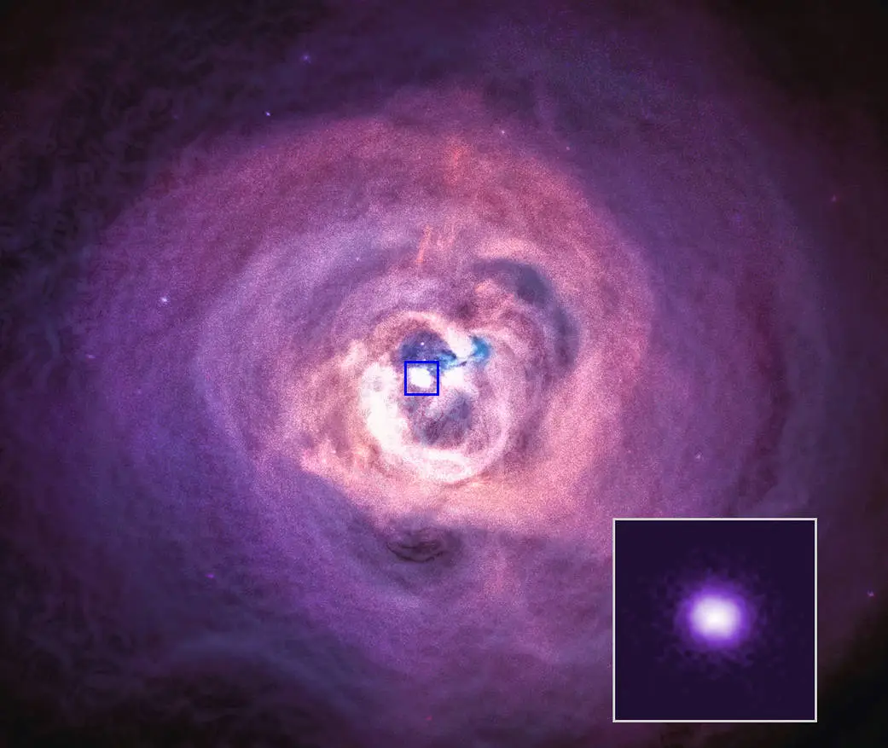

Fizik bilimi sayesinde elektron, proton ve nötrondan hepimiz haberdarız.
Bu parçacıklar normalde boyutsuz birer "nokta" olarak kabul edilir. Sicim Teorisi böyle demez.
Bu teori, parçacıkların birer nokta değil; sürekli titreşen ufak "enerji ipleri" yani sicimler olduğunu söyler.
Bu teori zaman zaman "Her Şeyin Teorisi" olarak adlandırılır.
Evrenin büyük bir bölümünü açıklayan Einstein'in Genel Görelilik Teorisi ile atom altı dünyayı açıklayan Kuantum Fiziği
normal şartlarda birbirlerine zıt düşer ve karadelikler, evrenin ilk anı gibi uç durumları açıklayamazlar.
Sicim Teorisi, parçacıkları birer nokta olarak görmeyi bırakın der.
Noktalar yerine ip olarak görerek bu iki zıt kuralı tek bir formülde birleştirir.
Formülün matematiksel olarak çalışabilmesi için 10 veya 11 boyuta ihtiyaç duyarlar.
Fakat bu ipler (Planc boyutunda) akılalmaz derecede minik olduklarından
günümüz teknolojisiyle laboratuvarda test edilememiştir.
Dolayısıyla henüz kanıtlanmamış olsa da çok güçlü bir matematiksel hipotezdir.
NASA’nın gözlemevinde gerçekleştirdiği deneysel sicim teorisinde Cambridge Üniversitesi liderliğindeki bir astronom ekibi,
sicim teorisinin matematiksel modellerinde varlığı öngörülen "Aksiyon" (Axion) adlı olağanüstü hafif ve görünmez parçacıkların izini sürmek istedi.
Bu küçük parçacıkları dünyadaki laboratuvarlarda üretmek imkansız olduğundan, araştırma için doğal bir parçacık hızlandırıcı görevi gören ve
Dünya'dan 240 milyon ışık yılı uzaklıkta bulunan Kahraman (Perseus) Galaksi Kümesi seçildi.
Deneyin mantığı kuantum fiziği kurallarına dayanıyordu: Eğer bu görünmez parçacıklar gerçekten varsa,
galaksi kümesindeki devasa manyetik alanlardan geçerken X-ışını fotonlarına (ışığa) dönüşmeliydiler.
Bu dönüşümün, Chandra teleskobunun yakalayacağı X-ışını spektrumunda belirli bozulmalar ve dalgalanmalar yaratması bekleniyordu.
Chandra teleskobu bölgeyi tam 5 gün boyunca aralıksız izledi ancak analizler sonucunda X-ışını spektrumunda hiçbir bozulma ya da dalgalanma tespit edilemedi.
Bu durum sicim teorisini tamamen çürütmedi;
fakat teorinin öngördüğü belirli kütle aralığındaki spesifik matematiksel modelleri tamamen elemiş oldu ve teorisyenlerin modellerini yeniden gözden geçirmelerini sağladı.

Görsel: NASA